Producing homographies, rectifying flat images, and blending photos
A homography is a general class of transformations between images; it models something broader than an affine transform called a projective transformation. This project is about finding homographies between two images (photographs in our case) taken from the same position by simply rotating the camera, which is an operation that relates images homographically. In this part (Part A) I click on points by hand to set shared references and solve for the homography between the two images. I then use it to rectify flat objects so that they look like they’re being viewed head-on, or to warp overlapping photos (photos with different rotations but shared references) to blend them into a mosaic.
All images here are resized to 1000 px wide for simplicity and to make my algorithms faster.
For Part A, I shot three sets, each of 3 photos. For each set I stayed in a single spot and only rotated my phone (with exposure locked) so that the center of projection is fixed, and thus the pictures are homographically related. I made sure to take plenty of overlapping pictures so that I could choose ones with a good balance of scope (far spread) and reconstructability (as it’s harder to make a homography with too little overlap).
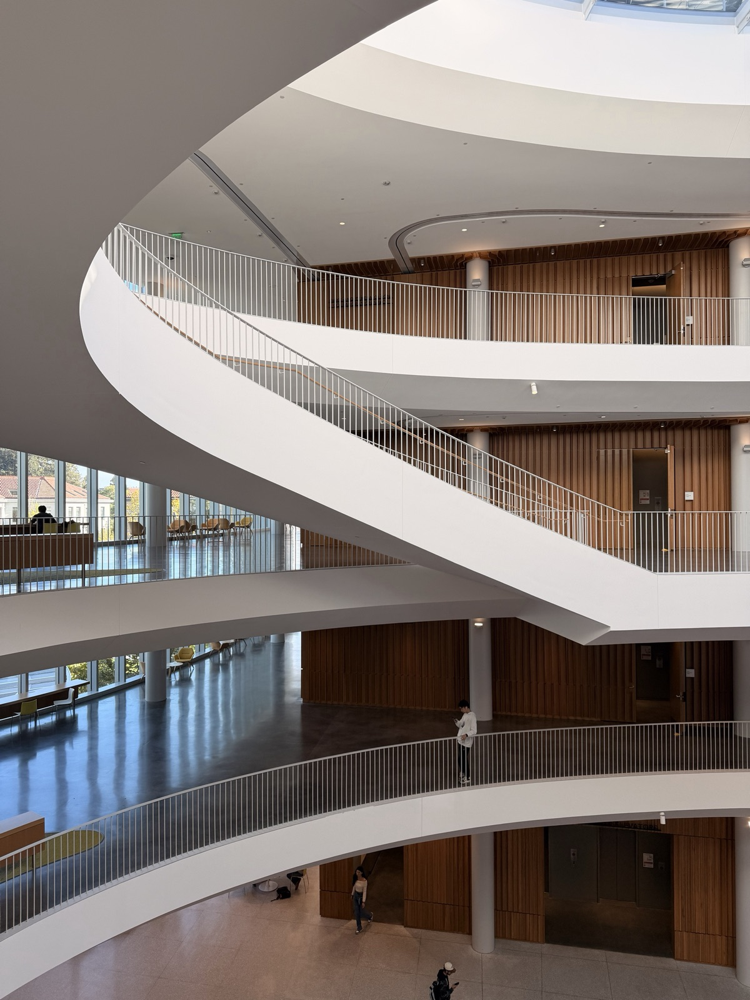
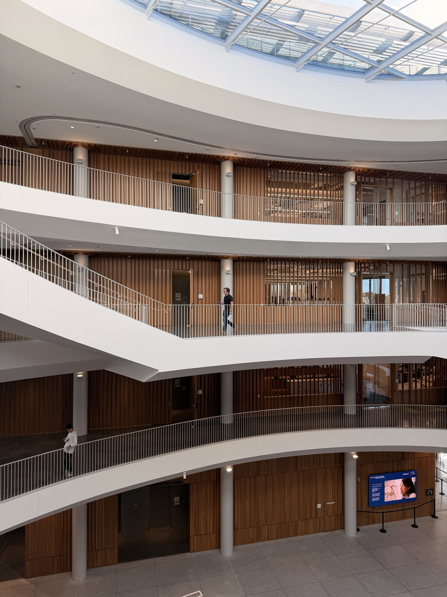
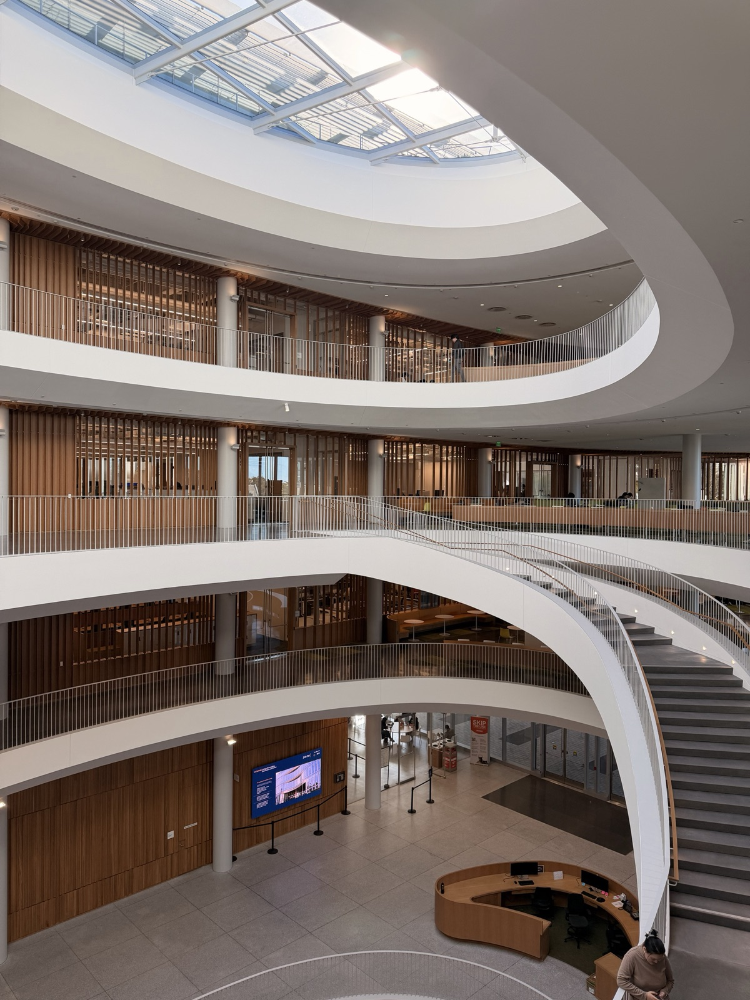
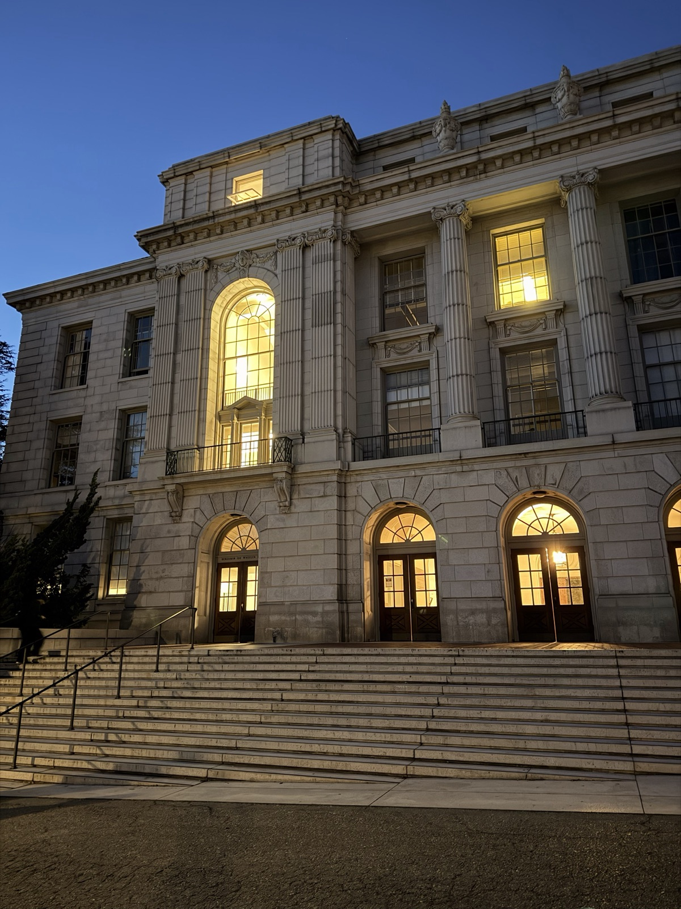
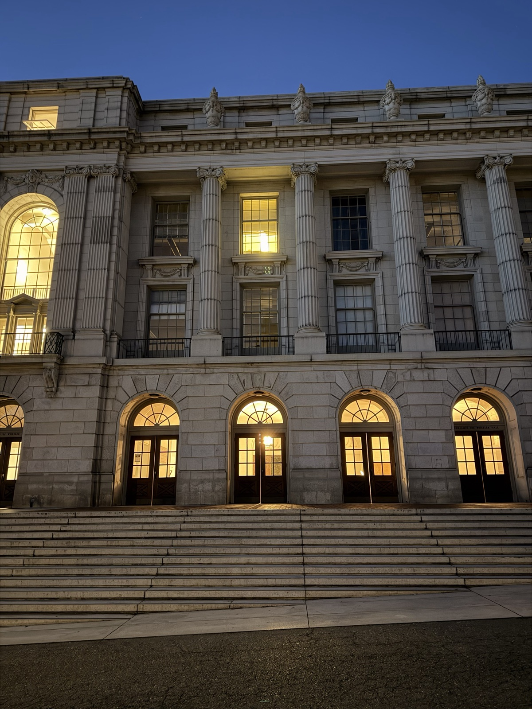
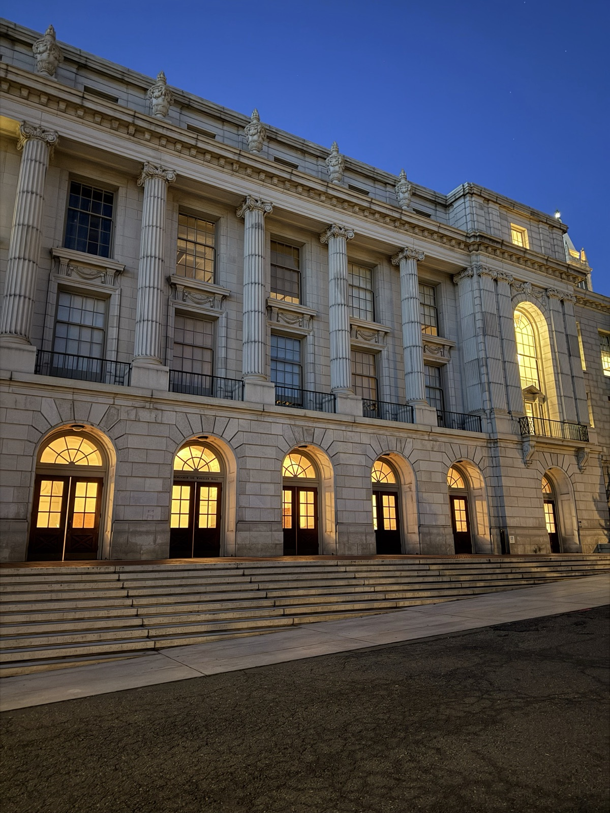
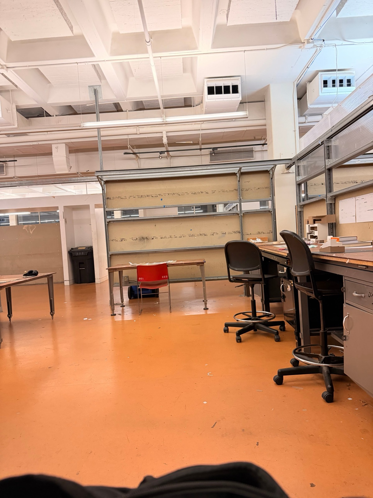
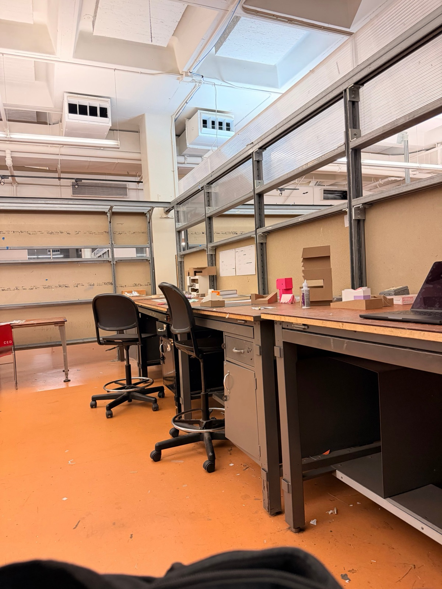
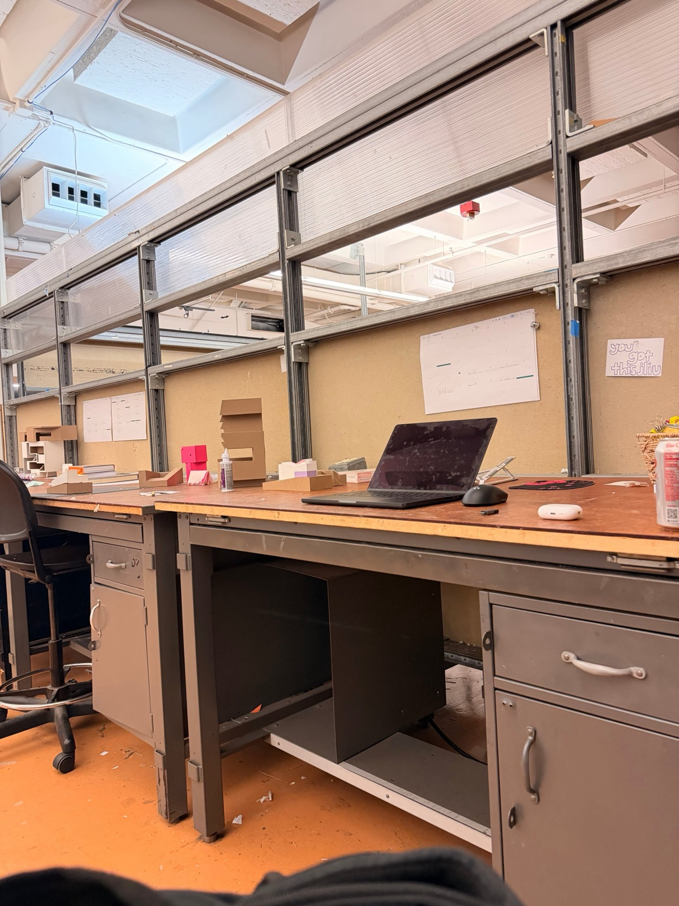
Homographies are formulated as transforming [x, y, 1] vectors into [x′, y′, 1] vectors with a linear transformation, which gives us a 3×3 matrix. However, since we don’t care about the scaling, this gives us 8 effective degrees of freedom, which can be modeled as setting the bottom-right entry to 1. That gives us 8 unknowns; we can thus write a set of two equations as follows:
x' = (h11 x + h12 y + h13) / (h31 x + h32 y + 1)
y' = (h21 x + h22 y + h23) / (h31 x + h32 y + 1)
⇒ h11 x + h12 y + h13 − h31 x x' − h32 y x' = x'
h21 x + h22 y + h23 − h31 x y' − h32 y y' = y'This is linear in hij and can be represented as solving for a vector h in the following system:
[ x y 1 0 0 0 −x x' −y x' ] [ x' ]
[ 0 0 0 x y 1 −x y' −y y' ] h = [ y' ]
h = [h11 h12 h13 h21 h22 h23 h31 h32]ᵀEach pair of points removes 2 degrees of freedom, so we can solve this exactly with 4 pairs, but this is noisy in practice. We instead click many more points (I chose 10) and solve this overdetermined system with least squares. For my mosaics I stitch 3 images together, so I use the middle one as a mutual reference for the left and right images.
def computeH(im1, im2):
A = []
b = []
for (x1, y1), (x2, y2) in zip(im1, im2):
# setup da matrix
A.append([x1, y1, 1, 0, 0, 0, -x1 * x2, -y1 * x2])
b.append(x2)
A.append([0, 0, 0, x1, y1, 1, -x1 * y2, -y1 * y2])
b.append(y2)
A = np.array(A)
b = np.array(b)
sol, _, _, _ = np.linalg.lstsq(A, b)
sol = np.append(sol, 1)
return sol.reshape((3, 3)), A, bMatching numbers are the same feature in both images.
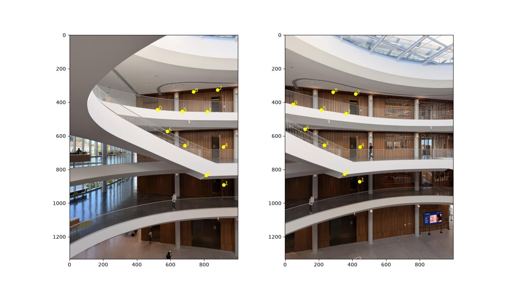
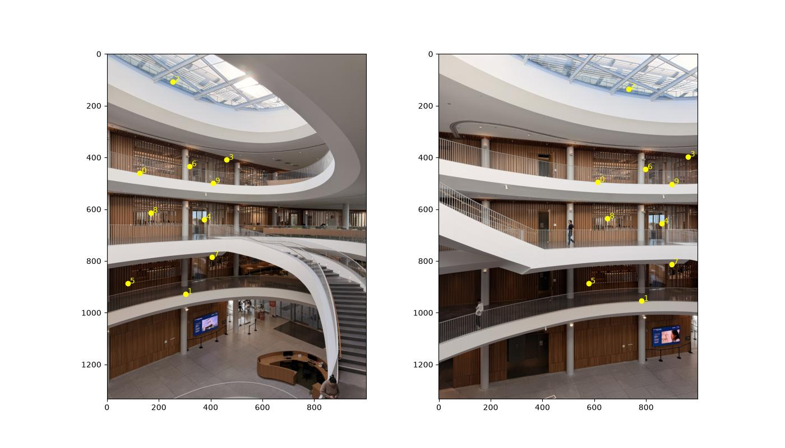
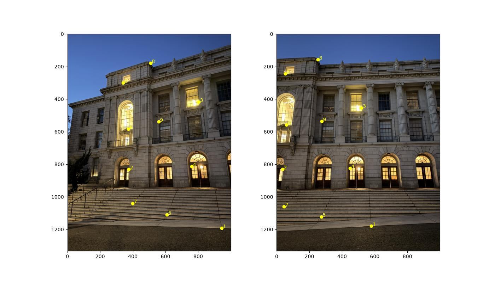
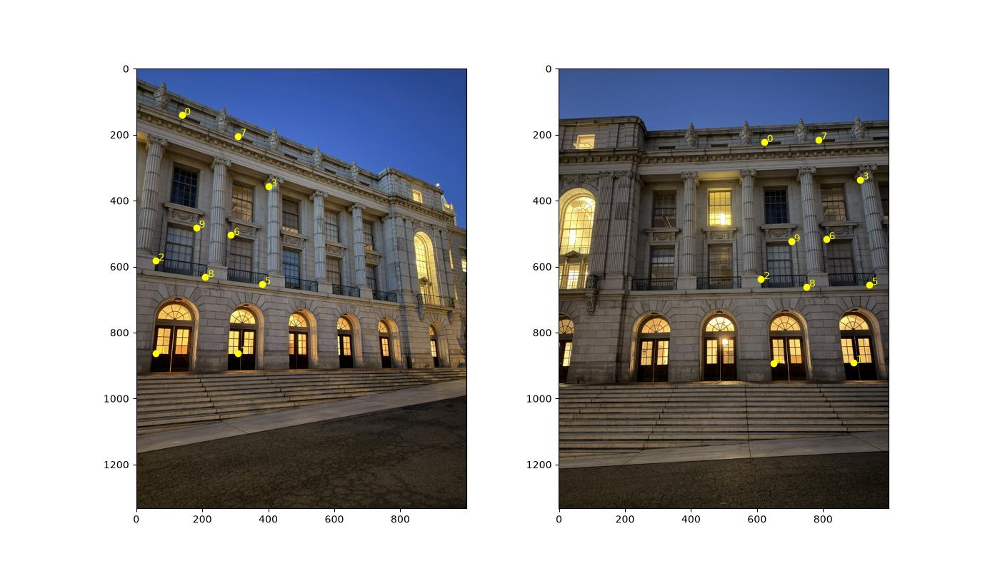
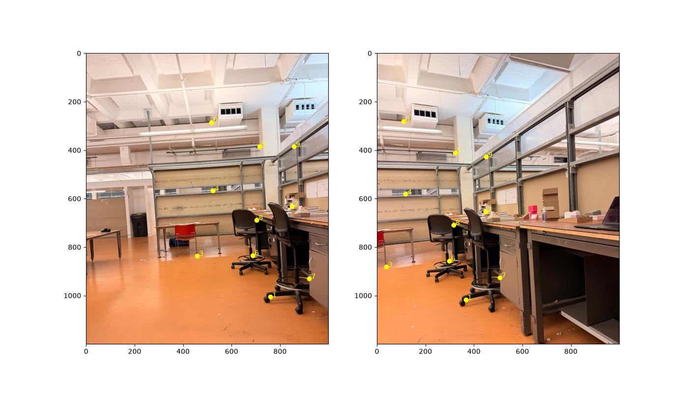
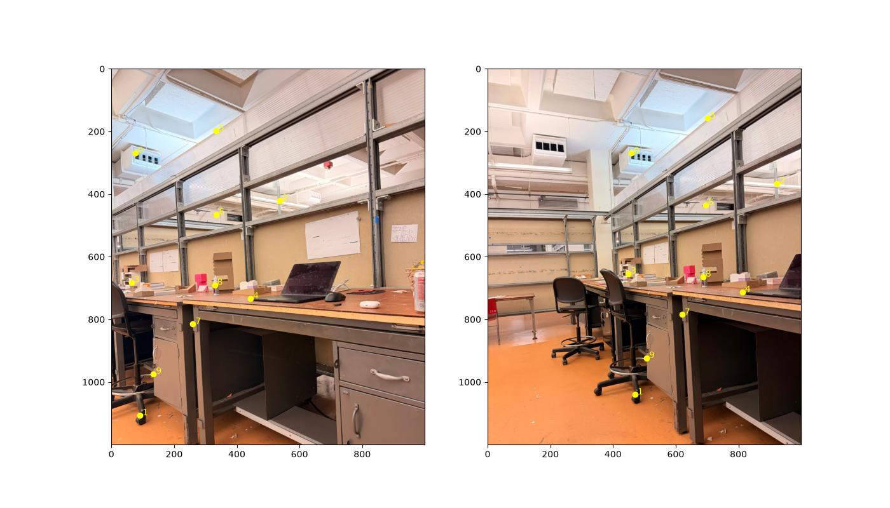
The first two correspondences (four of the 20 rows):
A (first 4 rows) b
[ 522 444 1 0 0 0 -24012 -20424 ] [ 46 ]
[ 0 0 0 522 444 1 -215586 -183372 ] [ 413 ]
[ 915 892 1 0 0 0 -405345 -395156 ] [ 443 ]
[ 0 0 0 915 892 1 -796965 -776932 ] [ 871 ]
... 16 more rows from the other 8 pointsGateway, left → middle Gateway, right → middle
[[ 1.851 -0.002922 -897.8 ] [[ 0.4989 -0.01073 513.9 ]
[ 0.5825 1.634 -430.6 ] [-0.335 0.8492 111.7 ]
[ 8.424e-4 2.286e-5 1 ]] [-4.841e-4 -1.859e-5 1 ]]Both warps I demonstrate in this part use inverse warping. I first send the source image’s four corners through H to get the basic bounding box of the warped result, and build a grid of every pixel in that box. I then map the entire grid back into the source with the inverse transform (H−1), read a color at every coordinate, and assign it to its respective place, leaving no holes in the output image.
My two warping methods differ just in how they sample the color from the source image. Nearest neighbor rounds the source location to the closest pixel (so just the closest integer pair in range). Bilinear takes the four pixels around it, weights each by how close it is, and takes the weighted average of their colors to get the final value.
def warpImageNearestNeighbor(im, H):
h, w = im.shape[:2]
corners = np.array([[0, w-1, w-1, 0],
[0, 0, h-1, h-1],
[1, 1, 1, 1]])
c = H @ corners
cx = c[0] / c[2]
cy = c[1] / c[2]
xmin, xmax = int(np.floor(cx.min())),int(np.ceil(cx.max()))
ymin, ymax = int(np.floor(cy.min())),int(np.ceil(cy.max()))
cols = np.arange(xmin, xmax + 1)
rows = np.arange(ymin, ymax + 1)
xs, ys = np.meshgrid(cols, rows)
pts = np.array([xs.flatten(), ys.flatten(), np.ones(xs.size)])
src = np.linalg.inv(H) @ pts
sx = np.round(src[0]/src[2]).astype(int)
sy = np.round(src[1]/src[2]).astype(int)
inside = (sx >= 0) & (sx < w) & (sy >= 0) & (sy < h)
out = np.zeros((xs.size, 3))
out[inside] = im[sy[inside], sx[inside]]
out = out.reshape(xs.shape[0], xs.shape[1], 3)
mask = inside.reshape(xs.shape)
return out, mask, (xmin, ymin)Same bounding box and inverse mapping as above; only the sampling changes:
def warpImageBilinear(im, H):
# ... same corners / bounding box / meshgrid / inverse mapping as above ...
sx = src[0] / src[2]
sy = src[1] / src[2]
inside = (sx >= 0) & (sx <= w - 1) & (sy >= 0) & (sy <= h - 1)
x = sx[inside]
y = sy[inside]
x0 = np.floor(x).astype(int)
y0 = np.floor(y).astype(int)
x1 = np.minimum(x0 + 1, w - 1)
y1 = np.minimum(y0 + 1, h - 1)
# how far between the neighbors (0 to 1)
a = (x - x0)[:, None]
b = (y - y0)[:, None]
out = np.zeros((xs.size, 3))
out[inside] = (1 - a) * (1-b) * im[y0, x0] + (a) * (1 - b) * im[y0, x1] + (a) * b * im[y1, x1] + (1-a) * (b) * im[y1, x0]
out = out.reshape(xs.shape[0], xs.shape[1], 3)
mask = inside.reshape(xs.shape)
return out, mask, (xmin, ymin)Before mosaics, I tried basic image rectification using the methods I described above. Starting from a single source image, I click 4 corners of something known to be rectangular, map them to a rectangle that I define by hand, use that to define a homography, and warp the image.
Corners mapped to a 340 × 145 rectangle
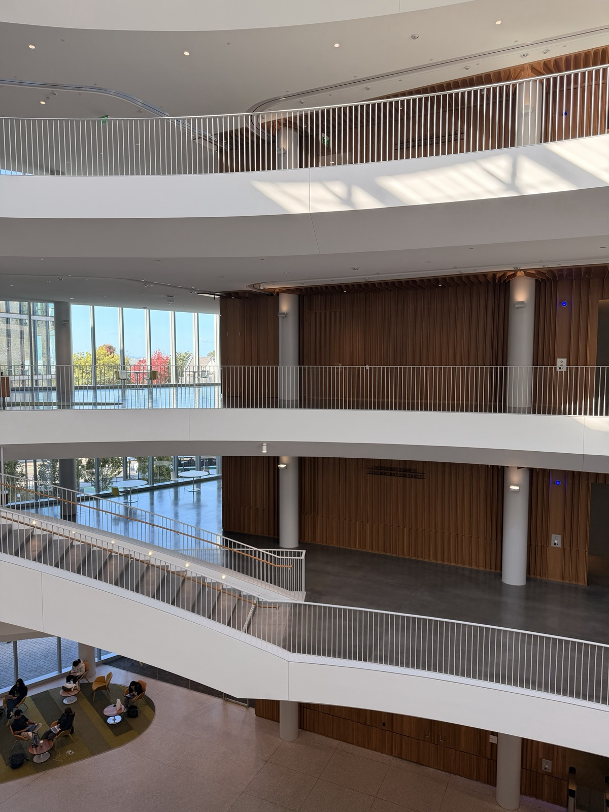
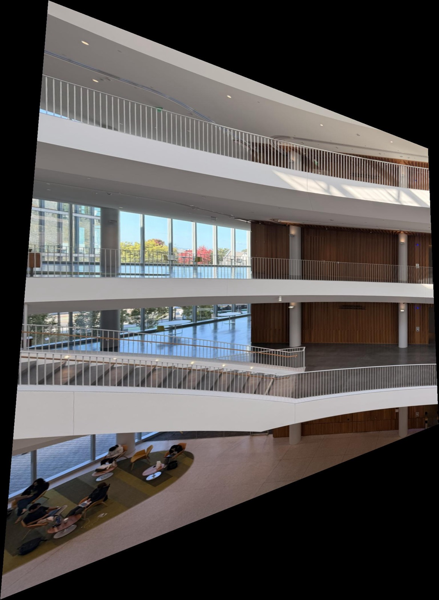
Corners mapped to a 300 × 42 rectangle
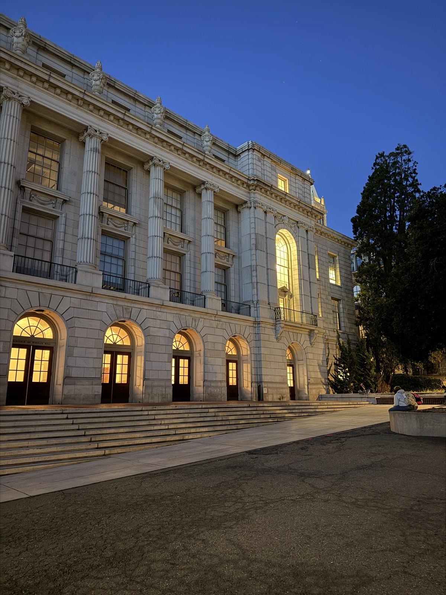
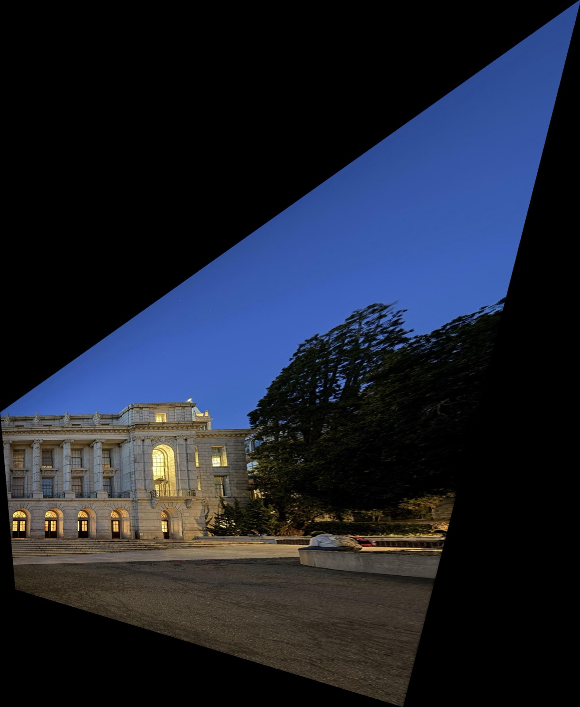
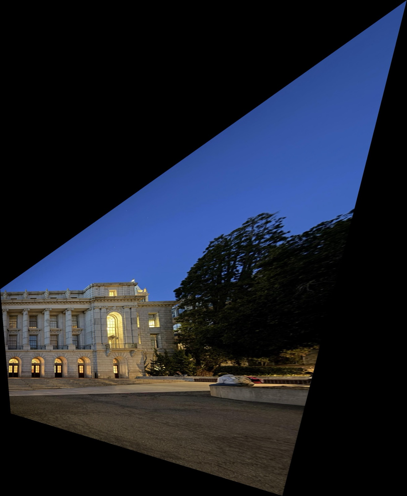
Corners mapped to a 150 × 100 rectangle
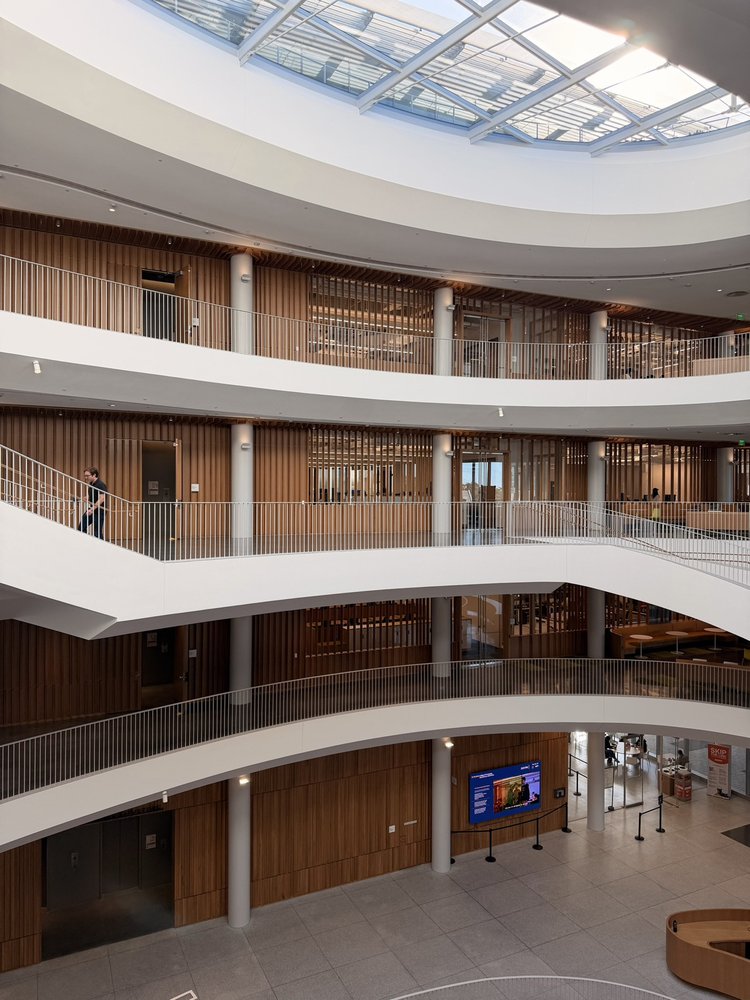
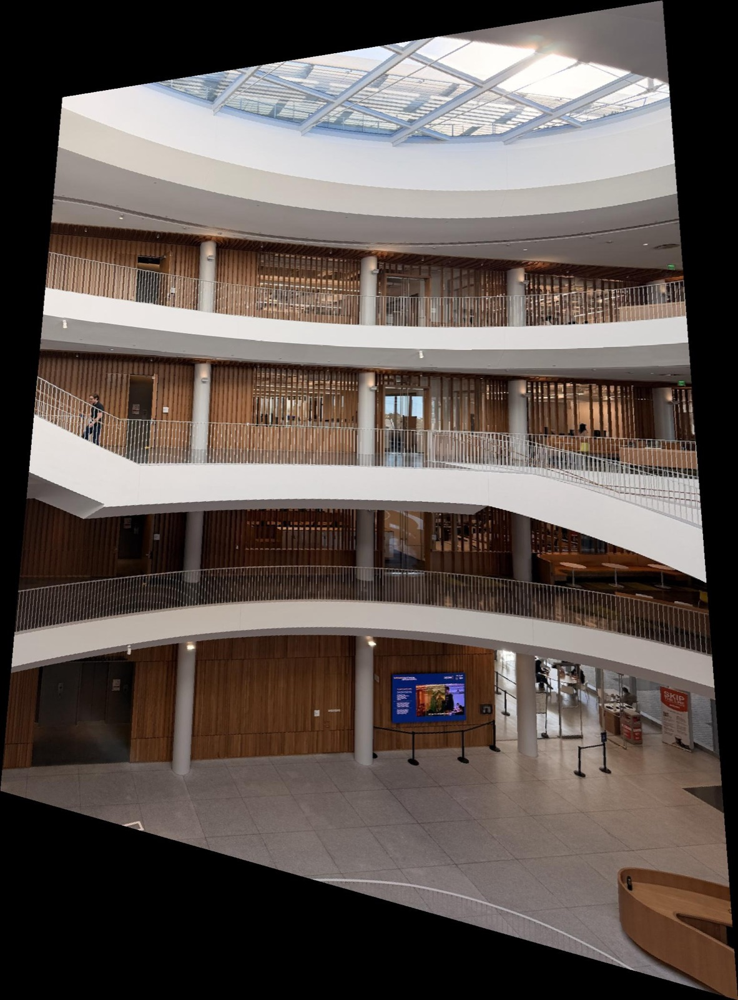
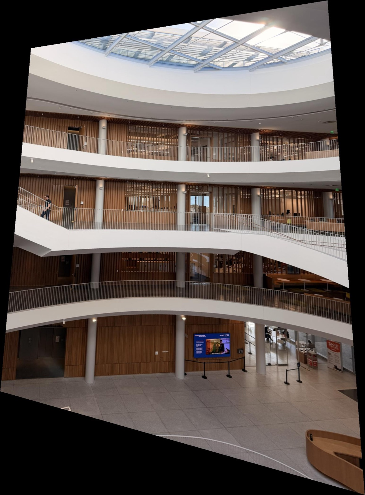
The same 150 × 150 crop from each warp, enlarged:
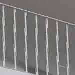
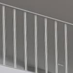
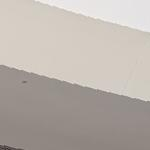
| Image | Nearest neighbor | Bilinear |
|---|---|---|
| Gateway wood wall | 0.12 s | 0.34 s |
| Wheeler Hall facade | 0.27 s | 0.58 s |
| Gateway atrium TV | 0.13 s | 0.36 s |
Nearest neighbor is cheaper as it only involves one rounding and one lookup per pixel. But it snaps every output pixel to a single source pixel, so straight edges come out jagged and stair-stepped, especially where the warp stretches the image. Bilinear does four lookups and a weighted sum per pixel, so it’s slower, but edges and text come out smooth. The cost is slightly softer detail, since every output pixel is a blend.
Mosaics are essentially repeating the above procedure with the center photo fixed and the two images on the sides warped to be consistent with the center image. Pasting the images on top of each other where they align can leave artifacts and hard seams where there are slight alignment differences. We instead feather them, with a weight equal to the distance transform of the mask (normalized to be max at 1). We then take a weighted average of the images where they overlap, so they blend into each other smoothly instead of switching at a hard line.
def blend(images, masks):
w = np.zeros(masks[0].shape)
tot = np.zeros(images[0].shape)
for img, mask in zip(images, masks):
w0 = distance_transform_edt(mask)
w0 = w0 / w0.max()
tot = tot + w0[:, :, None] * img
w += w0
weights = np.maximum(w, 1e-8)
return tot / weights[:, :, None]
def make_mosaic(name):
im1 = load_image(name + "_1.jpg")
im2 = load_image(name + "_2.jpg")
im3 = load_image(name + "_3.jpg")
p1, q1 = get_matching_points(im1, im2, 10, name + "_1_" + name + "_2")
p3, q3 = get_matching_points(im3, im2, 10, name + "_3_" + name + "_2")
H1 = computeH(p1, q1)[0]
H3 = computeH(p3, q3)[0]
w1, m1, o1 = warpImageBilinear(im1, H1)
w3, m3, o3 = warpImageBilinear(im3, H3)
imgs = [w1, im2, w3]
masks = [m1, np.ones(im2.shape[:2]), m3]
offsets = [o1, (0, 0), o3]
# just annoying size edge cases
xmin = min(ox for ox, oy in offsets)
ymin = min(oy for ox, oy in offsets)
xmax = max(ox + img.shape[1] for (ox, oy), img in zip(offsets, imgs))
ymax = max(oy + img.shape[0] for (ox, oy), img in zip(offsets, imgs))
height, width = ymax - ymin, xmax - xmin
canvas_imgs = []
canvas_masks = []
for img, mask, (ox1, oy1) in zip(imgs, masks, offsets):
r = oy1 - ymin
c = ox1 - xmin
h, w = img.shape[:2]
ci, cm = np.zeros((height, width, 3)), np.zeros((height, width))
ci[r:r + h, c:c + w] = img
cm[r:r + h, c:c + w] = mask
canvas_imgs.append(ci)
canvas_masks.append(cm)
result = blend(canvas_imgs, canvas_masks)
plt.imsave("out/" + name + "_mosaic.jpg", np.clip(result, 0, 1))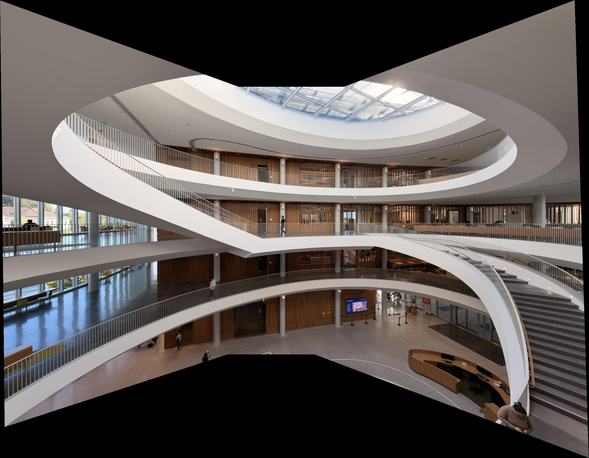
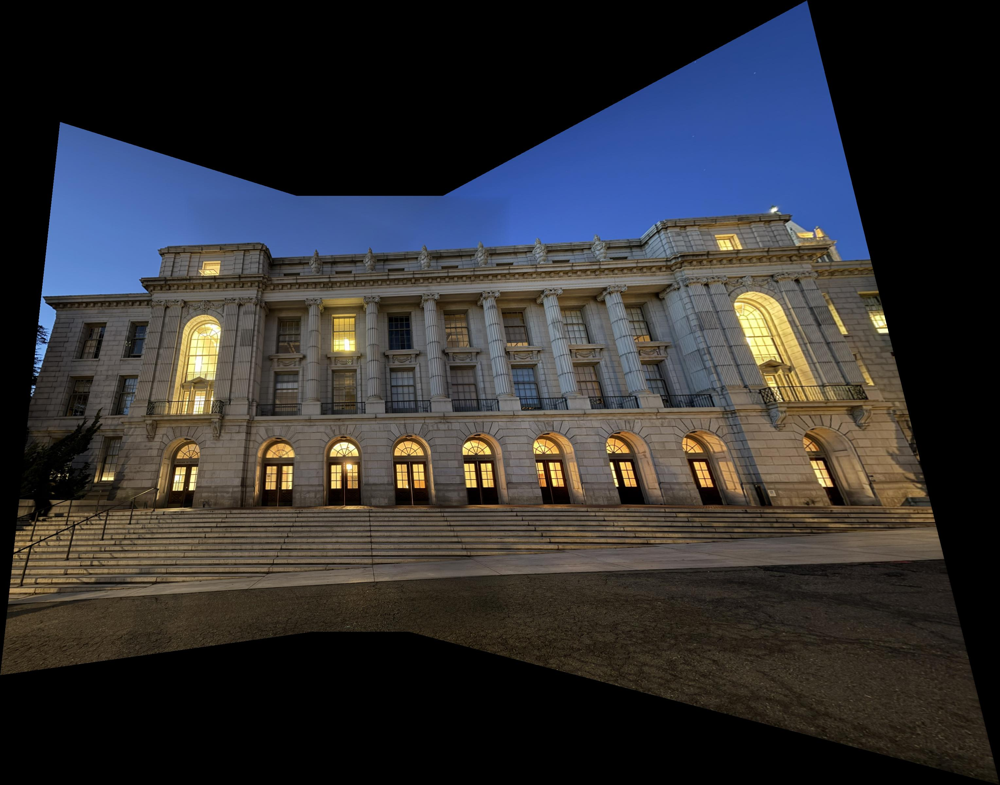
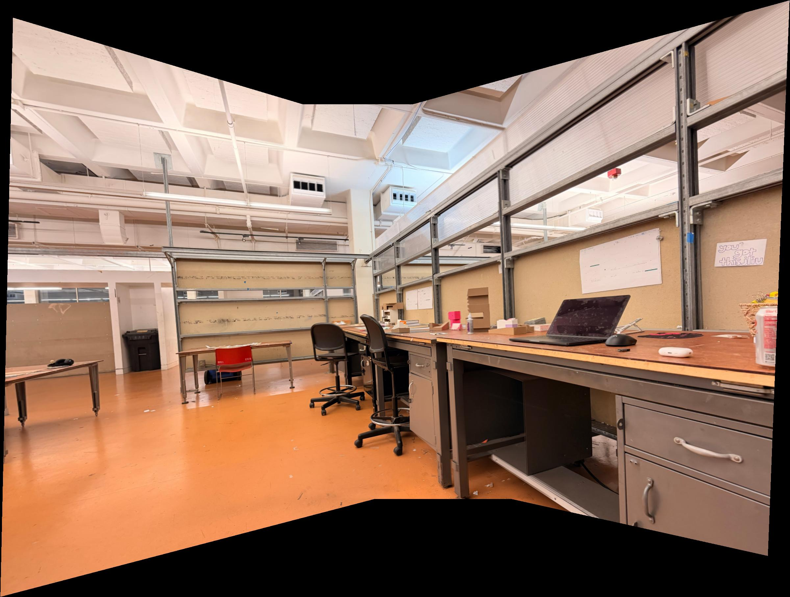
Coming in Part B.